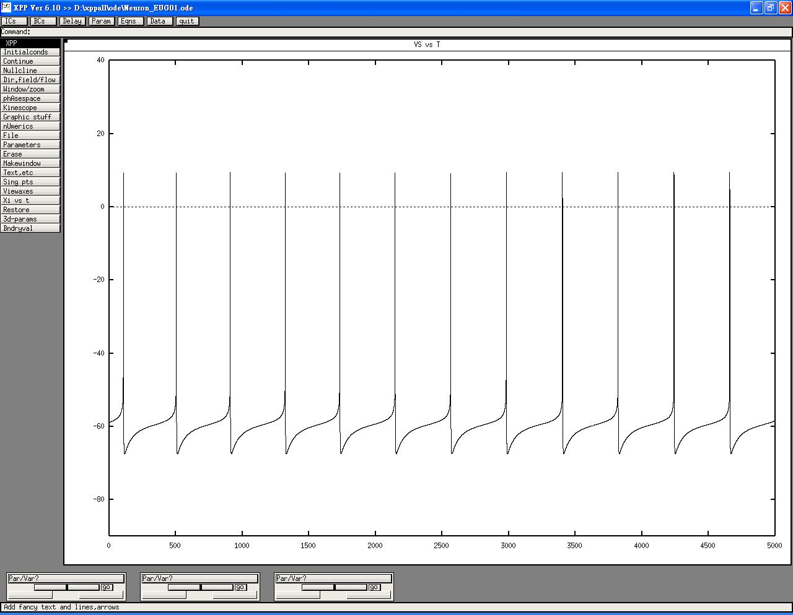

This is the readme.txt for the model associated with the paper. Huang CW, Chow JC, Tsai JJ, Wu SN. Characterizing the effects of eugenol on neuronal ionic currents and hyperexcitability. Psychopharmacology 2011; Dec 13; [Epub ahead of print] (http://www.springerlink.com/content/t001557034182482/) Abstract Rationale: Eugenol (EUG, 4-allyl-2-methoxyphenol), the main component of essential oil extracted from cloves, has various uses in medicine because of its potential to modulate neuronal excitability. However, its effects on the ionic mechanisms remains incompletely understood. Objectives: We aimed to investigate EUG's effects on neuronal ionic currents and excitability, especially on voltagegated ion currents, and to verify the effects on a hyperexcitability-temporal lobe seizure model. Methods With the aid of patch-clamp technology, we first investigated the effects of EUG on ionic currents in NG108-15 neuronal cells differentiated with cyclic AMP. We then used modified Pinsky-Rinzel simulation modeling to evaluate its effects on spontaneous action potentials (APs). Finally, we investigated its effects on pilocarpine-induced seizures in rats. Results: EUG depressed the transient and late components of INa in the neurons. It not only increased the degree of INa inactivation, but specifically suppressed the non-inactivating INa (INa(NI)). Its inhibition of INa(NI) was reversed by tefluthrin. In addition, EUG diminished L-type Ca2+ current and delayed rectifier K+ current only at higher concentrations. EUG's effects on APs frequency reduction was verified by the simulation modeling. In pilocarpine-induced seizures, the EUG-treated rats showed no shorter seizure latency but a lower seizure severity and mortality than the control rats. The EUG's effect on seizure severity was occluded by the INa(NI) antagonist riluzole. Conclusion: The synergistic blocking effects of INa and INa(NI) contributes to the main mechanism through which EUG affects the firing of neuronal APs and modulate neuronal hyperexcitability such as pilocarpine-induced temporal lobe seizures. --------- To run the model; XPP: start with the command Xpp Neuron_EUG01.ode This simulation will make a graph similar to figure 6. Notably, press Initialconds -> Go  and then get the results (Vs, Ina and Ina_in) in the left side of Figure 6 in the paper of Huang et al. Then press File Get par Set to change to EUG parameter set file, eugenol effects on the firing of action potentials shown in the right side of Figure 6 in that paper. Bard Ermentrout's website available at http://www.pitt.edu/~phase/ describes how to get and use xpp. This model file was submitted by: Sheng-Nan Wu Department of Physiology National Cheng Kung University Medical College Tainan City, Taiwan snwu@mail.ncku.edu.tw